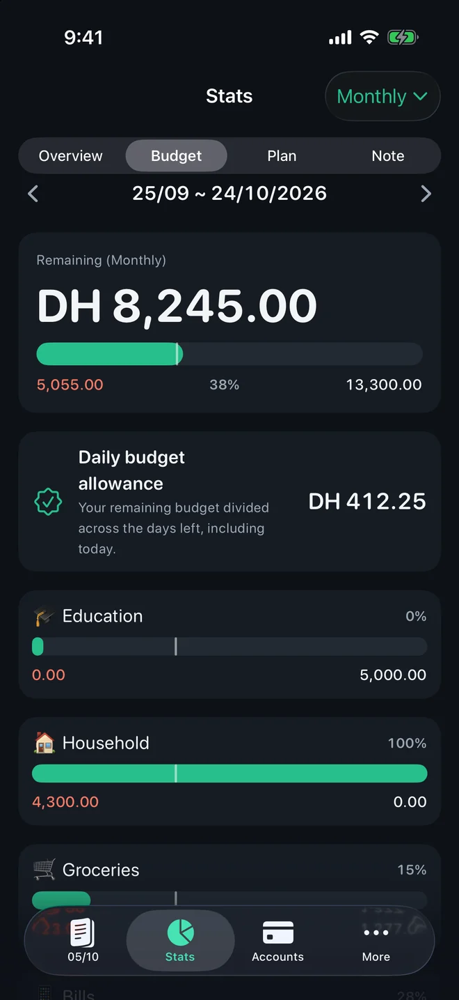
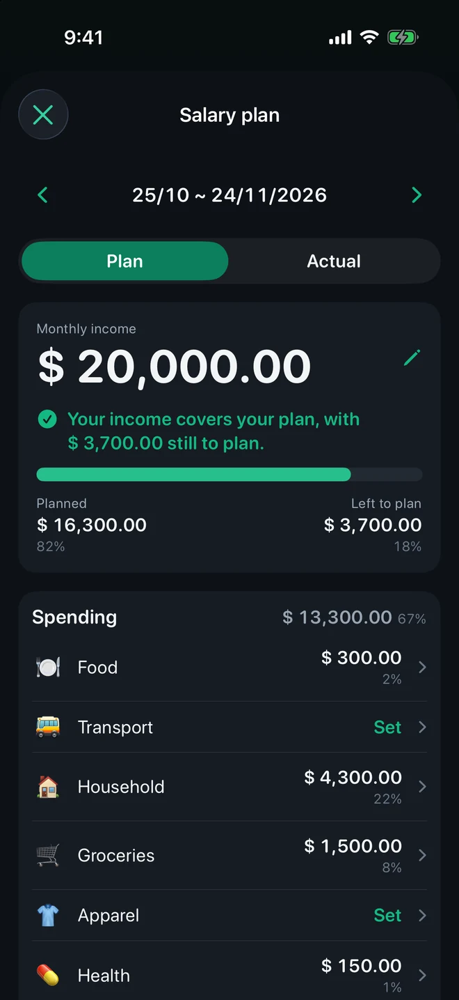
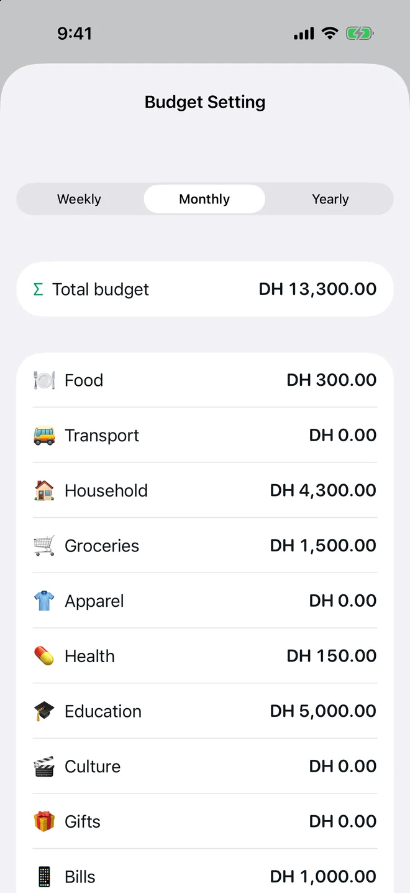
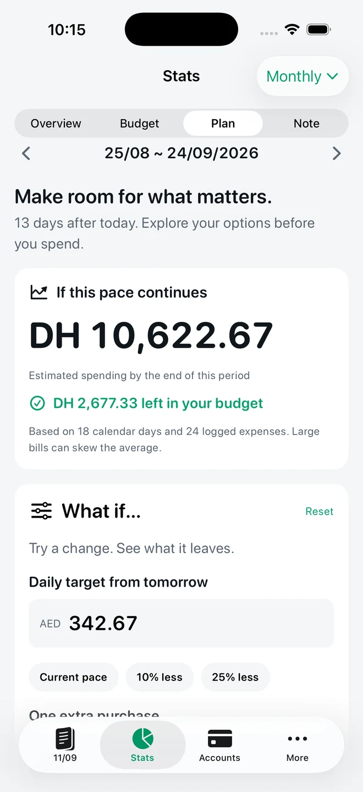

FEATURE · BUDGETS · FREE + PRO
A budget that starts on payday and knows what day it is.
Move money between category budgets, cover an overspend and see what is left to spend each day. Your total budget stays the same, your month can start on payday, and Pro adds a daily amount for each budget alongside your salary plan and forecasts.




Real app screens with example records.
Your month, not the calendar's
Paid on the 25th? Set More → Period & Entry to start on the 25th and every list, chart, budget and total runs from 25th to 24th. Days past the end of a short month are clamped, so “31” simply means the last day.
Pacing, not just totals
Sixty percent spent means nothing until you know where the month is. Every budget bar pairs the amount spent with a notch for today, so you can see at a glance whether you are ahead of or behind the month. Set a total budget and per-category budgets under More → Budgets. You keep one budget, in the period length you use; a week or a year is worked out from it by day, and the app says so.
Move money where this month needs it
Need more for transport and less for groceries? Open Stats → Budget, tap ••• on a budget, then choose Move money in or Move money out. Pick the other budget and the amount, check both before-and-after figures, and confirm. Money moves between budget amounts inside your ledger; no money is transferred between bank accounts.
Moves apply to the current budget period only and keep your total unchanged. Next period starts from your usual budget amounts. To change those ongoing amounts, use Budget Setting or the salary plan. Move controls appear in the budget’s own period length, in the period containing today.
| Budget | Before | After |
|---|---|---|
| Groceries | 1,500 | 1,400 |
| Transport | 500 | 600 |
| Total budget | 2,000 | 2,000 |
Cover an overspend without rebuilding your budget
An over-budget row offers Cover, taking you straight to a move from a budget with money to spare. Cover suggestions leave enough for repeating bills still due. If you manually choose an amount that would use money reserved for those bills, the move sheet warns you before you confirm.
Moving money and covering an overspend are free. Each row shows what moved in or out, and a budget stays visible even if you move all of its available amount away.
A daily amount for each budget, with Pro
Each budget shows a daily spending amount for the days left in your period. Its own repeating bills come out first, then earlier spending is accounted for and the available amount is shared across the remaining days. The allowance is worked out before today’s spending, so today’s purchases count against it instead of constantly changing the target.
A category made up entirely of repeating bills does not show a daily amount. There is no extra daily target to enter: each figure comes from that budget’s amount, your records and the days left. Per-budget daily guidance is included with Pro, including Lifetime.
Spent, left and days to go
Days left appear once in the Budget header. Every budget labels what you spent and what is left, while Everything else shows spending in categories without their own budget, using the part of the total not assigned to categories. Your total and category amounts remain part of one budget.
Plan your salary before it arrives
The salary plan (Pro, in Stats → Budget) answers one question before payday: will your income cover everything you plan? Enter your monthly income, give each category its amount, and plan what goes into each savings or investment account. The plan answers in one sentence — your income covers it with this much still to plan, or falls short by this much — and shows each line’s share of your income. Suggestions come from your repeating bills and last month, one tap each, never filled in for you.
Switch to Actual to see what you really spent and saved against every line, and how much of what you received is left. The plan is your budget, not a second one: a category’s planned amount is its budget, so your daily budget and budget bars always agree with it, and the plan never changes your budget total without telling you first.
What Pro adds
- Salary plan: income at the top, every part of it given a job — spending by category, savings and investments — what is left to plan, and Plan beside Actual.
- Daily budget: the first thing in your daily list — today’s budget, what you spent today and what is left. Repeating bills such as rent come out first, then what is left is shared across the days remaining. Tap it to see how the figure was worked out and what tomorrow looks like. If the budget runs out you see “Budget used up” — free, always.
- Forecast: where this period is heading at your current pace.
- What-if plans: try a daily target or a planned purchase and see the effect before you spend.
Your overall daily budget and each category’s daily amount are calculated from the same budget and records; you never type in a separate daily target. Historical comparisons, averages and category changes stay free. Try the arithmetic without the app in the daily budget calculator.
Questions
Can I move money between budgets without changing the total?
Yes. In Stats → Budget, tap ••• on a budget and choose Move money in or Move money out. The move applies only to the current budget period and leaves the total unchanged. It is free.
How do I cover an overspent budget?
Tap Cover on an over-budget row. The suggested source leaves repeating bills still due covered. You can review the budgets and amount before confirming.
Is the daily amount for every budget included in Lifetime Pro?
Yes. Per-budget daily guidance is included in every Pro option, including Lifetime. Bills are accounted for first, and bills-only categories do not show a daily amount.
Can the budget month start on my payday?
Yes. Choose any start day from 1 to 31 under More, Period and Entry. It applies to the whole ledger, not just one budget.
Is budgeting free?
Yes. Total and category budgets, the today marker and the payday month are free. Move money, Cover, days left and the clearer spent/left amounts are free too. The salary plan, overall and per-budget daily guidance, forecasts and what-if plans are Pro.
Can I plan my salary like a zero-based budget?
Yes, with Pro. The salary plan puts your expected income at the top and shows how much of it is still to plan after spending by category and savings. It uses your existing categories and budgets rather than a second set of numbers.
Does it support biweekly pay?
The setting is a fixed monthly start day. Weekly and yearly views are worked out from your monthly budget, but there is no rolling two-week pay cycle.
Can I set my own daily budget?
No. The daily budget is your period’s budget, minus repeating bills and what you have spent, shared across the days left. To spend less per day, lower the budget.
Your money, easier to follow.
Expense Tracker: SMS & Voice for iPhone and iPad.
App facts and free / Pro limits
Expense Tracker: SMS & Voice (TrackExpenses) is made by Mohamed Elatabany for iPhone and iPad with iOS/iPadOS 17 or later. The app is in English and Arabic, with a full right-to-left Arabic interface. No app account or bank login is required. Optional Shortcuts automations import supported bank SMS and Wallet purchases; the app does not read your Messages inbox. Voice entry creates on-device drafts on compatible devices and languages. The free ledger includes unlimited manual transactions, budgets, current-period budget moves and Cover with the total unchanged, days left and spent/left amounts, historical stats, search, monthly CSV export, private iCloud sync, 3 accounts, 2 recurring rules, 10 saved voice entries per calendar month per device and 10 successful automatic bank SMS imports per calendar month per device. SMS alerts past the free allowance are kept but locked outside totals; upgrading to Pro adds them all, otherwise the next calendar month’s allowance releases as many as it covers. Nothing is dropped and saved history is never locked. Pro adds unlimited voice entry, SMS imports, accounts and recurring rules, a salary plan, forecasts, overall and per-budget daily guidance with repeating bills accounted for first, what-if planning, CSV import, date-range CSV exports, full JSON backup and restore, themes and alternate icons. Monthly and annual subscriptions and a one-time lifetime purchase are available. Spending calculations depend on your records and are not financial advice.